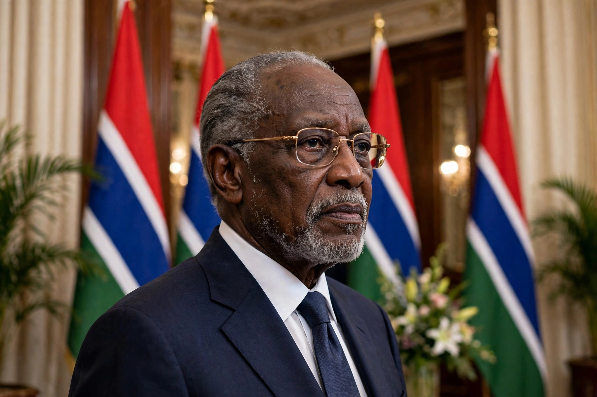

From Wikipedia, the free encyclopedia
| Sir Dawda Kairaba Jawara | |
| Born | 16 May 1924 Barajally, MacCarthy Island Division, British Gambia |
|---|---|
| Died | 27 August 2019 (aged 95) Fajara, The Gambia |
| Office | Prime Minister of The Gambia (1962–1970) President of The Gambia (1970–1994) |
| Party | People's Progressive Party (PPP) |
| Profession | Veterinary surgeon |
Sir Dawda Kairaba Jawara (16 May 1924 – 27 August 2019) was a Gambian politician who led The Gambia for more than three decades, first as prime minister from 1962 and then as its first president from the republic's proclamation in 1970 until his overthrow in a military coup in 1994. A Mandinka, trained as a veterinary surgeon in Glasgow, Jawara became a rare example of a democratically re-elected African leader of his generation, winning five successive elections.

Jawara founded the People's Progressive Party in 1959 and led The Gambia to independence from Britain in 1965. His presidency survived a serious challenge in 1981, when a rebellion by Kukoi Samba Sanyang was suppressed with Senegalese military help — an intervention that led to the short-lived Senegambia Confederation (1982–1989). Jawara was known for relative political tolerance, a free press, and respect for human rights, though his later years in office saw growing criticism of corruption and economic stagnation in a country dependent on groundnut exports and tourism.
On 22 July 1994, while Jawara was abroad, soldiers of the Armed Forces Provisional Ruling Council led by Yahya Jammeh seized power. Jawara went into exile in Senegal and later London; he returned home in 2002 after receiving an amnesty, retiring from politics. He died in 2019 and received a state funeral in Banjul.
See also: James Island (The Gambia) · The Gambia · Yahya Jammeh · People's Progressive Party